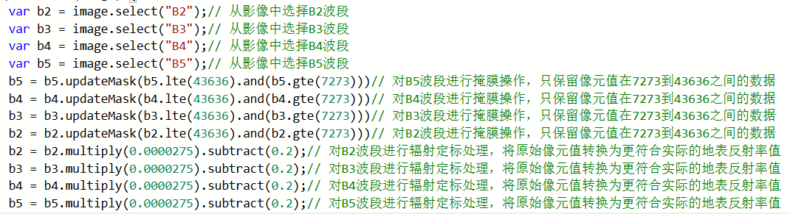
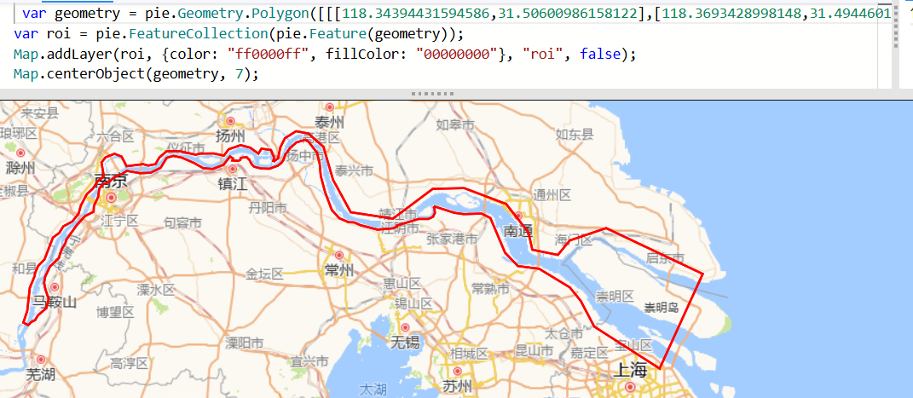
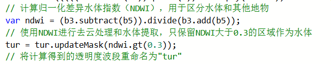
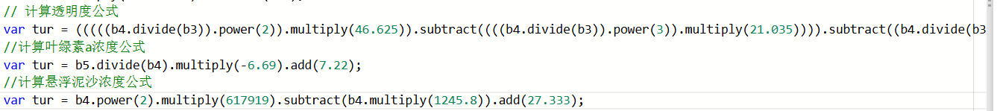

使用 PIE-Engine 进行长江干流水质反演获取叶绿素 a、水体透明度和悬浮泥沙数据，主要依托 PIE-Engine Studio 平台，基于 Landsat8 遥感影像展开，具体步骤如下：
1.数据准备与预处理：选用 USGS 提供的 Landsat8 Collection 2 Surface Reflectance（C2SR）数据集，其时间范围为 2013 年 3 月至今，更新频率 16 天，空间覆盖全球，分辨率 30m，能满足 2014 - 2024 年长江干流上海至重庆段研究需求。使用前，对 B3、B4、B5 波段数据进行预处理，通过乘 0.0000275 再减去 0.2 的操作，将原始像元值转换为更符合实际的地表反射率值。

2.划定研究区域与加载数据：在 PIE-Engine Studio 平台的数字地图上，用框选工具分别划定长江干流的上游（重庆至宜昌段）、中游、下游三个感兴趣区域。依据坐标信息加载对应 Landsat8 C2SR 卫星数据，并依次进行区域过滤、时间过滤、云量筛选、波段筛选、裁剪和拼接等处理，使卫星影像仅显示研究区域，为后续分析提供精准数据。

3.计算水质参数反演模型输入变量：利用归一化差异水体指数（NDWI）公式NDWI=(B3 - B5)/(B3 + B5)计算 NDWI 值，将大于 0.3 的像素判定为水体像素，经掩膜操作突出显示水体。此步骤不仅提取了水体，还为水质参数反演确定了研究对象范围。

4.构建并应用反演模型
叶绿素 a 浓度：采用红光波段（B4）和近红外波段（B5）遥感数据的比值构建反演模型，公式为叶绿素a浓度=-6.69*B5/B4+7.22。在 PIE-Engine Studio 平台输入经预处理的 B4、B5 波段数据，运行模型得到叶绿素 a 浓度数据。
水体透明度：利用红光波段（B4）与绿光波段（B3）反射率比值构建三次函数回归模型水体透明度=5.766-26.701*B4/B3+45.625*（B4/B3）^2-21.035*（B4/B3）^3。在平台中输入 B3、B4 波段数据计算水体透明度。
悬浮泥沙浓度：依据悬浮泥沙在红光波段特征明显的特点，构建反演模型悬浮泥沙浓度=617919*(B4)^2-1245.8*B4+27.333。在平台输入 B4 波段数据，得出悬浮泥沙浓度数据。
